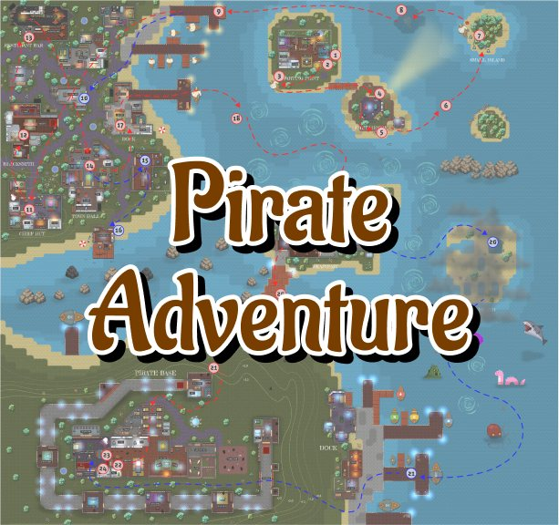
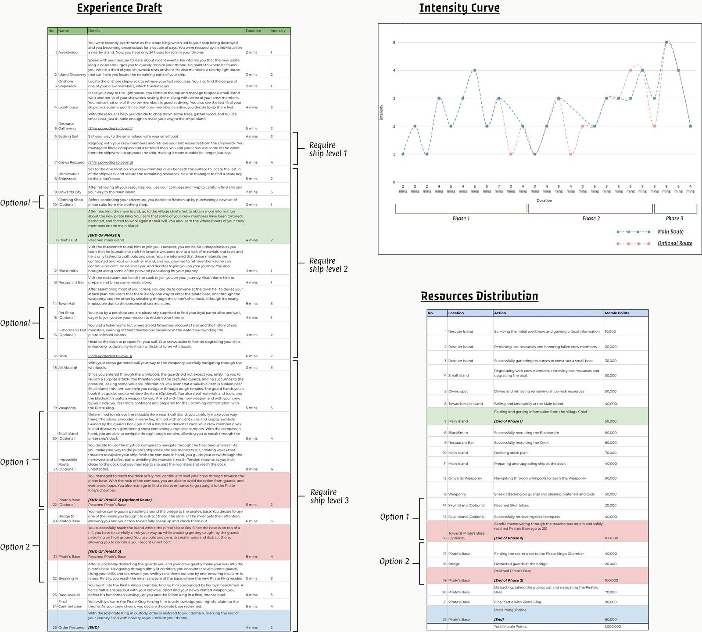

Level design · Open world · 2023 P-12
Pirate Adventure
A 150m × 150m pirate-themed map. Overthrown as Pirate King, your ship destroyed, you wake up rescued by an islander with 24 hours to take the throne back.

The premise
A 24-hour clock to gather your scattered crew, collect what you need, and infiltrate the pirate base that's now holding your throne.
Pacing and guidance
I drafted intensity curves before building, to plan where the map should push and where it should let up. Routes are optional — players choose their own order — but blockages, hazards and height changes steer exploration without walling anything off.
Environmental storytelling
The world tells you what it is through its buildings: a restaurant shaped like a ship, a town hall shaped like a skull. It sets the tone without a line of dialogue.
What I took from it
Drafting the intensity curve first was the lesson. Planning the shape of the experience before placing a single object made everything downstream easier — and the parts of the map I built before doing that are the parts that needed reworking.
Gallery
